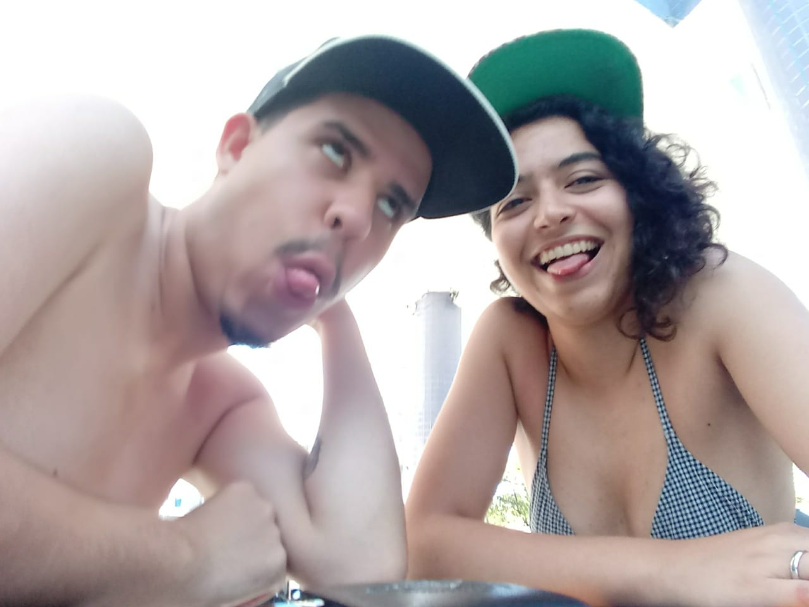
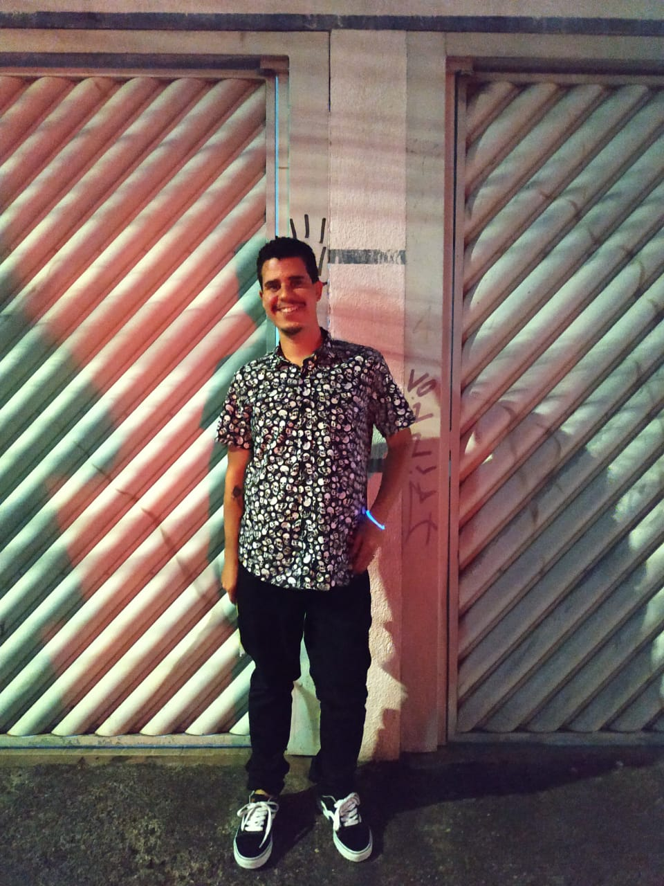
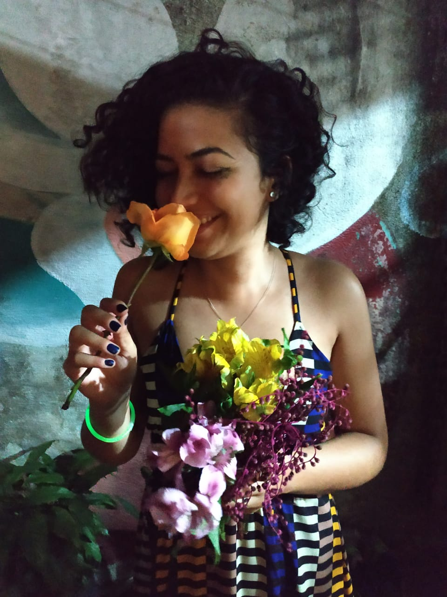

Bio
Conheça um pouco mais sobre quem está por trás do Kulturada
"When Humans meet Tech"

Aproximaram se através dos famosos aplicativos. O famoso "Deu match" já dura mais de um ano. Não se sabe ao certo quem chamou quem para o mundo da Arte e do Skate. Mas reza à lenda "casal que produz arte junto sorri à toa junto."
Thiago "pandazord" Ribeiro

Thiago Ribeiro, conhecido como pandazord nas redes.Web Designer, ilustrador, passou pelo Design de Games e hoje se aproxima da formação em Redes de Computadores pela FIAP. Apaixonado pela tecnologia, se aventura no mundo do Graffiti através da Fotografia.
Erika "Nii" dos Reis

Erika dos Reis, ou simplesmente Erika Nii.Grafiteira membro da Las Chicas Crew e MPV Crew anos atrás, hoje se aventura pelo mundo da fotografia. Já foi aluna e educadora, ambientalista e feminista. Papo de Mina, Art Underground, In Art e Kulturada, são alguns de seus projetos.